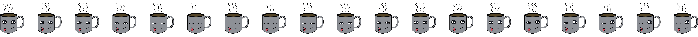
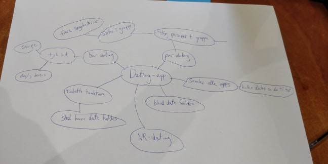
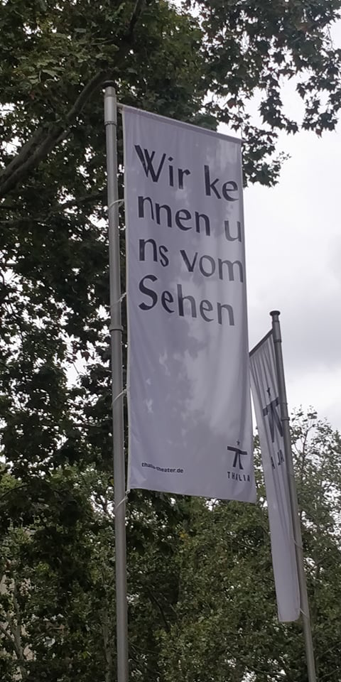
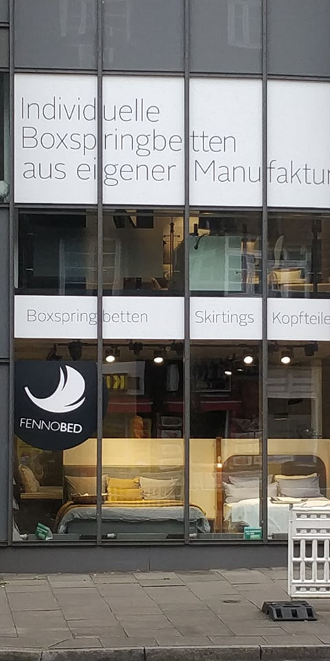
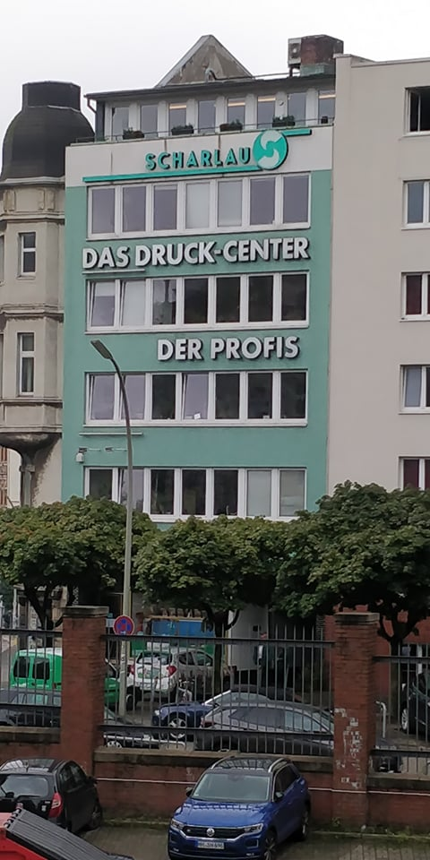
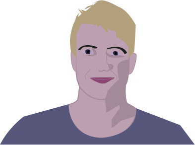
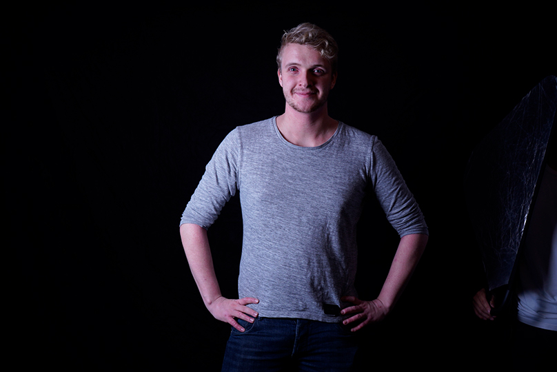
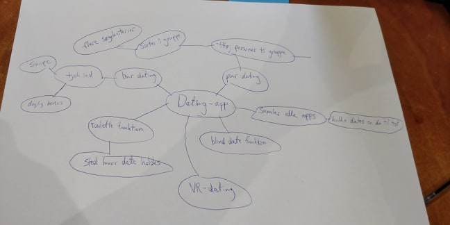
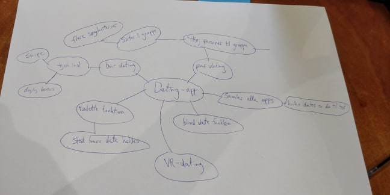

I denne opgave skulle jeg kode en animation ved hjælp af Adobe Illustrator. Dette gjorde man ved at lave figuren man vil animere i Illustrator, også skulle man ligesom en stopmotion film lave hver frame. På den måde ligner det at figuren bevæger sig. Der var intet krav om hvordan animationen skulle foregå. Så da det var første gang jeg gjorde dette valgte jeg at lave noget simpelt. Nemlig at gøre et objekt levende uden for mange bevægelser. Jeg valgte at lave 19 tegninger, der til sammen bevægende sig.
Den store udfordring i denne opgave var at placere figuren helt rigtigt på hvert billede, helt ned til en 0,01 pixel gjorde en forskel. Så efter at have lavet kaffekoppen gik arbejdet med at redigere og perfektionere så koppen ikke bevægende sig fra frame til frame. Til sidst satte jeg det ind i et HTML5 og ved hjælp af CSS lavende jeg den lille spillefilm.
Denne opgave gav mig indblik i hvor perfektionistisk man skal være for at få selv små projekter til at virke bare en smule professionelt. Derudover var det fedt at mærke hvor godt programmer som Adobe Illustrator og HTML5 virkede sammen. Det er umildbart ikke to programmer jeg havde regnet med ville virke. Derudover gav det mig lysten til at arbejde mere med begge programmer.

Video selvportræt
I denne opgave have vi muligheden at lave forskellige former for videoer. Vi kunne lave en portrætvideo, produkt video, et interview eller en reklame. Jeg valgte at lave en portrætvideo omkring mig og Multimedie design i Odense. Det første jeg gjorde, var at filme rundt på skolen med et normalt mobilt kamera. Derefter filmede jeg mig selv med opsat lys. Til sidst brugte jeg Adobe Premiere til at klippe, det hele sammen som jeg gerne ville have det. Jeg hentede et lydspor fra YouTube Audiolibrary for at have stemningsmusik.
Det tog kort tid at lærer Adobe Premieres basis, men jeg fandt hurtigt ud af at programmet har meget at byde på og måtte bruge YouTube videoer for at lærer de egenskaber jeg ønskede at bruge. Opgaven har givet mig indblik i filmredigering og brug af kamera. Derudover gav det mig øvelse i at tale til et kamera uden manuskript, hvilket jeg synes var meget svært.
Dating App
I en gruppe af fire fik vi til opgave at lave en dating app til en selvvalgt målgruppe. Som det første lavede vi en brainstorm på et stykke A3-papir. Vi diskuterede en masse, både hvem vores målgruppe skulle være og hvordan vores produkt skulle designes og fungere. Efter vi valgte målgruppen, valgte vi at kombinere vores ideer til det endelige koncept. Konceptet gik ud på at skabe en app, der giver muligheden for at finde en date og vælge hvor man vil på date. Derudover giver det muligheden for restauranter, bar mm, at komme med tilbud der er målrettet til personerne der skal på date. Appen kom til at hedde Meetinn
Vi begyndte at lave en mock-up, der blev bruger testen af 5 personer. Derefter rettede vi appen efter testpersonernes behov, op kom frem til en endelig prototype. Projektet gav mig indforståelse i hvor vigtigt det er at lave en brugertest, når man er færdig med sin mock-up. Det skaber et billede af hvordan forbruger ser produktet og giver meget bedre slutresultat. Derudover stod jeg for største delen af at lave mock-upen i Adobe XD, så mine erfaringer indenfor programmet blev markant forbedret.

Redesign - Fyns Rideklub
I dette projekt re-designede jeg Fyens Rideskoles hjemmeside ved hjælp af Adobe XD, Adobe Indesign og Photoshop. I gruppen lavede vi et design fra bunden hvor vi havde fokus at gøre hjemmesiden mere brugervenlig til vores målgruppe.
Øverst ser man det gamle billede og nedenunder ser man vores re-design. Vi samlede mange af hjemmesidens menuer i et mere enkelt og passende tema og underKalorier i en burgermenu på mobil versionen. I denne opgave fik jeg brugt op til flere forskellige modeller der er relevant for at skabe en hjemmeside fra bunden.
Modeller såsom C.R.A.P. Persona, Minerva-modellen og NUG modellen.
Bad Typografi



I en studietur til Hamborg fik jeg som opgave at finde steder, der havde en uheldig form for typografi. Jeg lærte hurtigt hvor meget typografi betyder for en virksomheds budskab og hvordan man bruger det rigtig og forkert. Her er tre eksempler jeg fandt, der har et mislykkes budskab.
Selvportræt Illustrator


En opgave gik ud på at lave et portræt i Adobe Illustrator. Så jeg tog et billede jeg producerede i et lightroom for at skabe udfordring med skygger. Det gav en bedre indforståelse for Illustrator og dens pentool.

 
